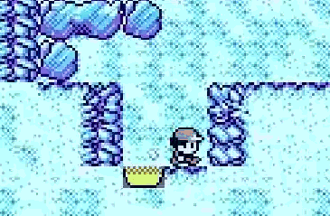
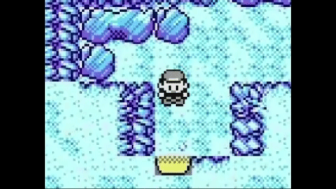
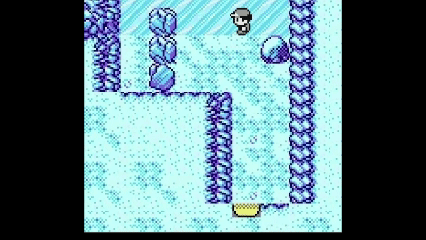
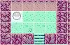

Q-Learning Agent vs. Pokémon Maze
Training a Q-learning agent on the maze: TD updates, reward shaping, and tuning
The minor project I wrapped up in the past few days was fun, but a thought about how I switched from Q-learning to a Monte Carlo approach for my ML project kept nagging me. Watching what my BFS algorithm produced on the Pokémon maze project gave me the idea (and the confidence) to try again with a Q-learning agent on this simple task.
The start
Thanks to my past experience building a training field for an AI agent (MC Blackjack agent), I started upgrading the Core section of my previous project with a few helpful classes:
- EpisodeEngine to apply and calculate the moves an agent can make from a given position in the maze
- EpisodeState to describe the current state of the running episode
- QTable to store the
(status, action)values
Keeping in mind that an episode is an entire run of a pawn (the character in the maze), I also wrote the initial training field for my agent.
The training setup (Pokémon.Maze.TrainingField)
Starting from the familiar ε decay handling, the ε-greedy policy, and α management, I began writing code; like the MC algorithm, the initial flow looked roughly like this:
- set up the initial
EpisodeState - loop (until the exit is found)
- check available actions in the current state
- choose an action from those
- apply the action to the current state
- reward the agent based on the outcome
- terminate the episode when appropriate
Honestly… that is pretty much it!
Q-learning training
The elephant in the room was staring me down: what I had implemented so far mirrored my previous MC setup; it was time to move forward and implement a proper Q-learning algorithm.
Studying the formal update rule gave me everything I needed to implement it:
Q(s, a) ← Q(s, a) + α [r + γ max_{a'} Q(s', a') - Q(s, a)]s: the current state of the episode; in practice, how I encode the current state in my QTablea: the action taken from the available ones using the ε-greedy policyα: constant in this case (0.1); the learning rater: the reward for the action just takenγ: the discount factor; it controls how much the agent weighs immediate reward versus future reward (0: only the immediate reward; 1: future rewards count as much as the present one). From the formula it is clear how this factor weights the future maximum value at the next state relative to the current estimate (see this section for why it matters)s': the state after applyingains; the next statea': the best action (highest Q-table value) among those available ins'
Here is the result (pseudo-code style) of how I translated that into code:
EpisodeState episodeState = new(_entrancePosition, _itemsPositions);
HashSet<Action> availableActions = _episodeEngine.GetAvailableActions(episodeState);
bool exitFound = false;
while(true) {
QStatus s = episodeState.ToQStatus();
Action a = learningAgent.ChooseAction(availableActions, s, epsilon);
ApplyActionOnEpisodeState(a, episodeState);
// s'
QStatus nextS = episodeState.ToQStatus();
exitFound = episodeState.CurrentPosition == _exitPosition;
// r
float r = ComputeReward(s, nextS, exitFound);
// actions valid for s' -> for the next loop as well
HashSet<Action> nextAvailableActions = _episodeEngine.GetAvailableActions(episodeState);
if(exitFound){
learningAgent.LearnFromTerminalState(s, a, r);
break;
}
learningAgent.LearnAndBootstrap(s, a, r, nextS, nextAvailableActions);
availableActions = nextAvailableActions;
}Note: The exitFound flag routes learning through a terminal-state path, which deserves a closer look. Once a terminal state (exit reached) is found, I do not want further bootstrapping from beyond that outcome, so γ can be treated as 0 there. The update simplifies to:
Q(s, a) ← Q(s, a) + α [r - Q(s, a)]No s' or nextAvailableActions are needed here because the key idea in RL is to assign value to the action that moves you into a state; I assign a large r (since reaching the exit happens in s') to the pair (s, a) because it leads to the desired outcome.
An unstable release
The code felt promising, so I added more spice: items placed at strategic points in the maze, so the agent could decide whether they were worth detouring for. The items included:
- a Master Ball (very high reward)
- a TM24 (medium reward)
- a Pearl (low reward)
Each was represented as a Poké Ball in the maze.
I updated the grid matrix with the new value from ObjectEnum: ObjectEnum.Item, the Pokémon.Maze.CLI, and implemented a dedicated view for agent autoplay: Pokémon.Maze.AI.UI (most of the code came from the earlier Pokémon.Maze.UI).
Then I launched the agent with the Q-table produced by the code so far… the result was stunning:

"Non posso né scendere né salire… NÉ SCENDERE NÉ SALIRE!"
Converging to a stable version
I will be honest: from here on, most of the tuning was trial and error.
I wondered why the agent was not pulled toward the exit. After debugging the training loop, I saw that it still was not reaching the exit reliably, even accounting for random ε-greedy moves. My take is that on a maze as large as ours (40×29), many more steps than the ~170 counted by the optimal BFS path (from before) may be required. Another limit was my TIMEOUT_STEPS: a cap on steps per training episode before forcing termination. I had added it as a safety net against infinite loops and to keep runs shorter.
At that point I set TIMEOUT_STEPS to int.MaxValue for experimentation and kicked off a very slow training run. The result was… memorable:

"Look! I've obtained a loader!"
It was clear I needed a stronger signal toward the exit. The first idea that came to mind was a reward based on Euclidean distance to the exit. Reading further convinced me that, because the pawn cannot move diagonally, Manhattan distance is a better fit: d = |x₂ - x₁| + |y₂ - y₁|.
Gemini also suggested raising γ from 0.9 to 0.99 because the discount factor weights rewards that arrive farther in the future. With γ = 0.9, the horizon is often described as on the order of tens of steps from the current s; with γ = 0.99, that stretches toward a longer lookahead.
After those adjustments I finally saw my first complete valid run after training on 100k episodes.

Local minimum (slippage)
Happy with the result, I started stressing the system: shrinking TIMEOUT_STEPS and TRAINING_EPISODES_NUM, refining rewards, and at one point swapping item positions (moving the Master Ball, the highest-reward pickup) to encourage longer but worthwhile routes. It was fascinating to watch!
It was all a bed of roses until…
Moving the high-reward item into this section

broke my setup. In that spot the agent slipped into a loop (a local minimum) that after heavy debugging and reading I recognized as a classic issue with Manhattan-based shaping.
When the item pulls the agent there, it faces a tight spot: a cage where almost every move that escapes sideways is punished, so the agent can stay stuck. The area lies perpendicular to the exit, so moving left or right increases Manhattan distance; lateral moves earn negative reward, and with walls blocking a straight vertical path, every lateral step needed to go around is penalized and the policy can freeze.
A well-known mitigation is a negative reward for revisiting cells.
The approach I landed on looked like this:
private float ComputeReward(QStatus s, int stepCount, QStatus nextS, int nextStepCount, bool timeout, bool exitFound, BitMask visitedCells)
{
// - delta steps
float reward = (nextStepCount - stepCount) * Rewards.StepCost;
// manhattan distance to the exit
int sDistanceToExit = GetManhattanDistance((s.X, s.Y), _exitPosition);
int nextSDistanceToExit = GetManhattanDistance((nextS.X, nextS.Y), _exitPosition);
int distDelta = sDistanceToExit - nextSDistanceToExit;
float shaping = nextSDistanceToExit < sDistanceToExit
? distDelta * Rewards.CloseToExit // + reward if closer to the exit
: distDelta * (Rewards.CloseToExit * 0.2f); // farther: smaller penalty to allow exploration
reward += shaping;
// discourage revisiting cells
if(visitedCells.IsVisited((nextS.X, nextS.Y))) reward += Rewards.RevisitingCell;
// + items rewards
if (s.TM24PickedUp != nextS.TM24PickedUp) reward += Rewards.TM24PickedUp;
if(s.MasterballPickedUp != nextS.MasterballPickedUp) reward += Rewards.MasterballPickedUp;
if(s.PearlPickedUp != nextS.PearlPickedUp) reward += Rewards.PearlPickedUp;
// termination rewards
if (timeout) reward += Rewards.Timeout;
if(exitFound) reward += Rewards.ExitFound;
return reward;
}
public static class Rewards
{
public const float PearlPickedUp = 10;
public const float TM24PickedUp = 50;
public const float MasterballPickedUp = 300;
public const float Timeout = -50;
public const float ExitFound = 1000;
public const float StepCost = -1;
public const float CloseToExit = 0.5f;
public const float RevisitingCell = -0.5f;
}A valid Q-learning agent
Eventually I obtained a trained agent that finishes the maze in a reasonable number of steps. It seems to value the Master Ball near the exit (matching its reward) and to skip the low-value Pearl in the cage area (see this section). Only 50k episodes were needed (it had largely converged by ~17k).
I then tried other item layouts; for example, placing the Pearl past the icy lake in the center of the maze, led the agent to skip it:
What I've learned
This post is long enough, so I will keep this short.
In my experience with projects like this, theory comes first; trial-and-error tuning follows. Solid programming matters, especially the ability to see the architecture clearly. Performance also matters: the sheer number of training iterations will punish sloppy choices, especially in a domain where theory is not always intuitive and many approaches can solve the same problem.
If you ask me whether it was worth it: absolutely! watching a trained agent move on its own is hard to beat.
One can even say that is a rewarding sensation... rewarding like...
...like a Master Ball with a 300 reward value in a maze where each step costs only −1 😉
Full code here.